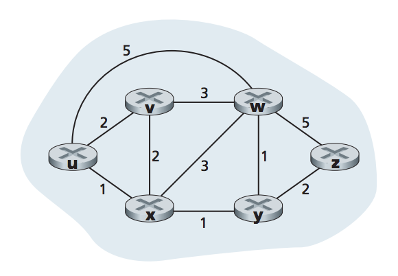

The router a host is typically attached to. When a host sends a packet, it is transferred to its default router.
The default router of the source host
The default router of the destination host
a routing algorithm finds a path from source router to destination router given a set of routers with connecting links
A graph is used to formulate routing problems. A graph G= (N,E) is a set of N nodes and E edges. Where each edge is a pair of nodes from N. 
A path in a graph G=(N,E) is a sequence of nodes (x1, x2,..., xn) such that each pair (x1, x2) are edges in E.
A path between the source and destination that has least cost. If all edges in the graph have the same cost, the least-cost path is also the shortest path
The path with the smallest number of links between the source and the destination
Computes the least-cost path between source and destination with complete global knowledge of the network. takes all nodes and link costs a input. It can be calculated at one site or repplicated at multiple sites. Algorithms with global state information are often referred to as link-state (LS) algorithms.
Calculation of least-cost path is carried out in an iterative and distributed manner. Nodes do not have complet informaiton about all nodes and links. Nodes only begin with knowledge of their directly connected links. A node gradually calculates the least-cost path to a destination or set of destinations
Each node maintains a vector of estimates of costs (distances) to al other nodes in the network.
Routes change slowly over time as a result of human interaction such as a forwarding table being changed.
Changes the routing paths as the network traffic loads change. Dynamic algorithms are more responsive to network changes, they are also more susceptible to problems such as routing loops.
Link costs vary dynamically to refelect levels of congestion in links. Load-sensitive algorithms will tend to choose routes around such a congested link